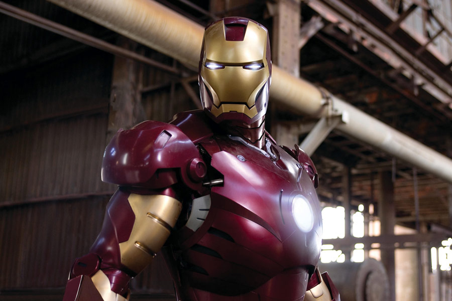

Iron man
Iron man (2008) -filmweb

"Iron Man" to historia miliardera, przemysłowca i genialnego wynalazcy Tony’ego Starka (Robert Downey Jr.),
szefa Stark Industries, głównego dostawcy broni dla rządu USA. Beztroski styl życia Tony’ego zmienia
się na zawsze, kiedy po testach przeprowadzanych z nową bronią jego konwój zostaje zaatakowany,
a on sam porwany przez rebeliantów. Ranny od pocisku, który utkwił w pobliżu serca, Tony zostaje zmuszony
do skonstruowania potężnej broni dla Razy (Faran Tahir), tajemniczego przywódcy rebeliantów.
Nie zważając jednak na żądania porywaczy, Tony wykorzystuje swój intelekt i geniusz, aby skonstruować zbroję,
która utrzyma go przy życiu i pomoże w ucieczce. Po powrocie do Ameryki Tony stara się dojść do ładu
ze swoją przeszłością i przysięga, że jego firma Stark Industries będzie się teraz rozwijać
w zupełnie nowym kierunku. Mimo oporu Obadiaha Stane (Jeff Bridges),
swojej prawej ręki i jednego z szefów firmy, który przejął nad nią rządy podczas jego nieobecności,
Tony spędza całe dnie i noce w warsztacie, pracując nad konstrukcją zaawansowanej technologicznie zbroi,
która zapewni mu nadludzką siłę i ochroni przed atakami.
Strona główna